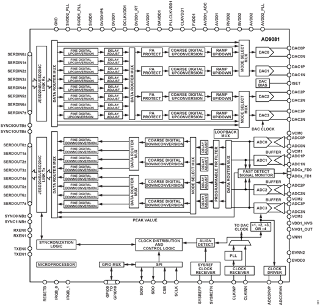
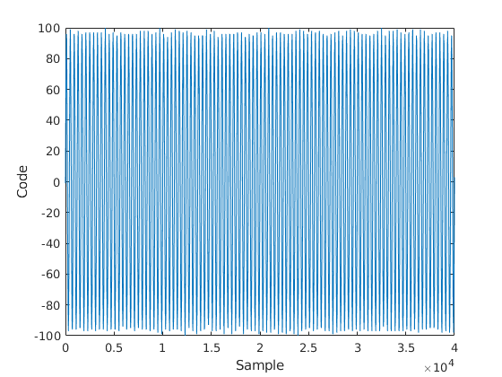

AD9081 Behavioral Model Introduction
The AD9081 is a highly integrated RF mixed-signal front-end (MxFE) that features four 16-bit, 12 GSPS DAC cores and four 12-bit, 4 GSPS ADC cores, as shown below:

The device includes an optional on-chip clock multiplier (up to 12GHz) for DAC and ADC sampling clock generation as well as broadband ADC and DAC cores.
The transmit and receive digital datapaths are highly configurable and support a wide range of single-band and multiband applications with varying RF bandwidth requirements. The AD9081 transmit and receive datapaths consist of four main datapaths in support of wideband signals and eight channelizers in support of narrower band signals. For multiband applications with wide separation between RF bands, the channelizers can be used to process the individual RF bands to reduce the overall complex data rate needed to represent each narrower band. Both the main and channelizer datapath stages offer flexible interpolating and decimation factors to allow a more manageable data interface rate aligned to the actual signal bandwidth requirements. The numerically controlled oscillator of each stage can be independently tuned for maximum flexibility.
The models available in the High-Speed Converter Toolbox are designed to educate users on the configuration, features, and limitations of the AD9081. However, it should not be expected to match hardware exactly, but be similar in behavior. It should not be used for exact performance measurements.
The device model is split into two components, one modeling the transmit path and one for the receive path. Both are System Objects and have methods and properties to allow configuration and passing of data into the models. For details on the different features select from the links below. For a basic overview of the models go to the \hyperref{H_C9E8316D}{Quick Start} section below.
Model Limitations
The models are primarily designed to expose the DSP features of AD9081 and the different configurations possible. This does not include the JESD interfaces or highly detailed implementation of the ADCs or DACs within the device. However, the converter models will have similar NSD performance of the device.
Quick Start
Each TX and RX model instance can be instantiated like any other System Object in MATLAB through the constructor call. The constructor can be used to parameterize the model but it is typically more understandable to do this separately from the constructor as below:
rx = adi.sim.AD9081.Rx; % Call constructor of Receiver model
rx.MainDataPathDecimation = 4; % Set CDDC decimation to 4
% Call constructor with arguments
rx = adi.sim.AD9081.Rx('MainDataPathDecimation',4);
The receiver model has dozens of properties and are set in a similar way to the above MainDataPathDecimation. These properties are validated when update and at runtime so the model will not run in an undefined mode.
On receive, the input data is assumed to be in volts and the output of the model will be in codes. Note that these are not strictly ADC codes depending on what processing is enable inside.
We can demonstrate a typical usage flow of the receiver through a few examples. In the below example feeds a 50% fullscale and 110% fullscale signal into the four ADCs in the form of a matrix. The input to the RX model must always be a 4 real Nx1 arrays of type double, representing the input to each ADC. N must be a multiple of the total decimation enable and should be relatively large for performance reasons.
rx = adi.sim.AD9081.Rx;
% Create sinewave at 50% FSR
sw = dsp.SineWave;
sw.Amplitude = 0.125; % volts
sw.Frequency = 10e6;
sw.SampleRate = rx.SampleRate;
sw.SamplesPerFrame = 4e4;
data = sw();
outputCodes = rx(data.*0.5,data.*0.5,data.*0.5,data.*1.1);
% Plots
plot(real(outputCodes));xlabel('Sample');ylabel('Code');

On the TX side the usage model is the same, but we are instead passing integers to be transmitted from the DACs and the outputs are codes to the relative fullscale of the DAC which is 16-bits.
tx = adi.sim.AD9081.Tx;
tx.MainDataPathInterpolation = 2;
tx.ModeSelectMux = 0; % Set DAC inputs to real data from CDUCs.
% Create sinewave at 50% and 25% FSR
sw = dsp.SineWave;
sw.Amplitude = 2^15*0.5; % codes
sw.Frequency = 10e6;
sw.SampleRate = rx.SampleRate;
sw.SamplesPerFrame = 4e4;
dataS = sw();
data = int16(dataS);dataHalf = int16(dataS.*0.5);
[outputCodes0,~,~,outputCodes3] = tx(data,data,data,dataHalf,data,data,data,data);
% Plots
plot(real(outputCodes0)); hold on;
plot(real(outputCodes3)); hold off;
xlabel('Sample');ylabel('Code');

Inspecting Properties
When using the model individual properties can be inspected for their functionality. Leveraging the help command will print out useful information on each setting. Follow the patterns below to perform lookups:
MainDataPathDecimation Main Data Path Decimation
Specify the decimation in the main data path which can be
[1,2,3,4,6]
rx =
adi.sim.AD9081.Rx with properties:
CDDCNCOFrequencies: [1000000 1000000 1000000 1000000]
CDDCNCOEnable: [0 0 0 0]
FDDCNCOFrequencies: [1000000 1000000 1000000 1000000 1000000 1000000 1000000 1000000]
FDDCNCOEnable: [0 0 0 0 0 0 0 0]
MainDataPathDecimation: 1
ChannelizerPathDecimation: 1
Crossbar4x4Mux0: [1 2 3 4]
Crossbar4x8Mux2: [1 2 1 2 3 4 3 4]
PFIREnable: false
ModeSelectMux1: false
SampleRate: 4.0000e+09